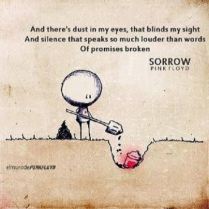
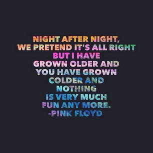
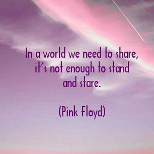

Фан-сайт группы Pink Floyd



Pink Floyd — британская рок-группа, знаменитая своими философскими текстами, акустическими экспериментами, инновациями в оформлении альбомов и грандиозными шоу.Является одной из наиболее влиятельных и успешных групп в рок-музыке.
Группа была основана в 1965 году однокурсниками по архитектурному факультету лондонского политехнического института Ричардом Райтом (клавишные, вокал), Роджером Уотерсом (бас-гитара, вокал), Ником Мэйсоном (ударные) и их кембриджским другом Сидом Барреттом (вокал, гитара).
В 1968 году к четвёрке присоединился Дэвид Гилмор, который заменил Барретта, после того как последний покинул группу. Предпоследний альбом группы (The Division Bell), последний тур и негласный распад состоялись в 1994 году.Последнее выступление классического состава произошло в июле 2005 года.